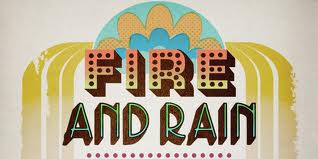

Interview with author David Browne
David Browne, contributing editor at Rolling Stone, is the author of the new book "Fire and Rain: The Beatles, Simon & Garfunkel, James Taylor, CSNY and the Lost Story of 1970". In it he walks us chronologically through that turbulent year, following four artists at different stages in their career; some breaking up, others breaking wide. It’s a cracking fun read for anyone interested in the music of the period and worth the price of admission alone for the juicy details about the crumbling yet enduring relationships of the Beatles and especially Simon & Garfunkel, whose entire career is not well documented in the popular literature. S&G may have started out as something of an appealing if occasionally pretentious folk duo, but by Bookends and finally with Bridge Over Troubled Water, they had become something quite substantial and these records definitely hold up with the best of the period. So it’s great to see Mr. Browne exploring their artistic and personal lives at their creative peak, even if it was to be their last gasp as a viable, chart-topping pop act. I talked to him about his new book and started out with the most fundamental question I could think of.

Why these 4 artists?
It started with me wanting to write about the records of my youth, the first records I ever bought. When I realized the four records discussed in the book all came out in 1970, and when you put them together, they basically tell a story. It was almost happenstance. And I realized, oh, three of them were by iconic 60's acts that broke up and one was this rising star who came to embody so many trends in music that came after that. Then when I did more research I learned that they all interacted or knew each other in some way. Stephen Stills hanging out with Ringo in London, Art Garfunkel going to the James Taylor concert, Paul Simon being threatened by Let it Be...
I love that story.
Yeah, so there were more connections than I thought.
It seems as if the fragmentation we now live with in music got its start back then.
I think you saw maybe the first generation gap, if you look at the charts that fall, you have all this burgeoning soft rock, Cat Stevens and the Carpenters, that was all middle of the road, but aimed at rock fans. And then you had Black Sabbath and Led Zeppelin and that was not for that generation, but their younger siblings. That splintering, it wasn't just everybody listening to the Beatles, or the Stones.
At the same time, rock had gone from something of a trifle to big business..
Yeah, that was the lesson of Woodstock, not only how many people showed up, but there was a movie and a soundtrack album and second soundtrack album, and they realized the buying power of the counterculture. They would actually spend money on things!
One comparison you draw, and people drew it at the time, was like, there go the Beatles and here comes CSNY, the new Beatles. What do you make of that, with one group formed by four teenage friends and another by established superstars?
I think that was probably very illustrative of that big business attitude you were seeing then, where groups formed organically, which they still do, to the idea of a "supergroup" and 69-70 was the peak of that, with Blind Faith and Ginger Baker's Air Force (laughs)...I don't want to say how corporate it was more organic than that and CSNY were sympatico in the beginning and their voices did blend well.
But there was a self consciousness that wasn't there before.
Yeah, that's a good point, and even the way they used their names was very telling. They were trying to pull off this grand experiment. Lets be this free floating, free love kind of ensemble. It was less about the spirit of a group but furthering yourself using the group.
I love how you tell the story of how Paul Simon heard Let it Be and said holy crap, I've got this big piano song coming out (Bridge Over Troubled Water), and here go the Beatles. You are constantly reminded of their overwhelming presence. You did not want to be trumped by the Beatles.
No, and yet at the same time I was amazed, talking to people who worked at Apple and reporters who covered them, how accessible they were. Reporters would just come over to Apple and hang out. Maybe John would come in and sit down, and George would go by and they'd go over and say hello, do an interview. If we try to do that with Kanye West these days, we get pummeled by security guards. You can't even get in the same building.
I was shocked at how threatened Paul Simon was by Garfunkel's movie career.
He (Garfunkel) was being given these new opportunities and not just playing second fiddle and not being seen as an appendage and that was threatening to Paul.
And Simon was teaching a class at NYU?
Yeah, it wasn't big at all, it was really small. Here you are putting out a record with an instant hit record and Garfunkel quietly goes to Europe and Simon quietly teaches this class. They had already decided it was over but they never bothered to tell anyone, their manager, the record company, people you'd expect to be the first to know.
You were me telling things I didn't know about the Beatles. I have to congratulate you!
Thanks
I realized that 1970 is the great undocumented Beatle year.
Yeah, that Bob Spitz book ends on April 10th, with the break up, and its over. And I always wondered, as a fan, what happened next?
What started then (1970) that we still live with?
That's a great question. I think that fragmentation of the audience we were talking about started then. And the idea of free music. All that gate crashing - "why should we have to pay to see the Allman Bros., the corporations are ripping us off", and that's the first time people thought that. That filters down to the internet. And all these sensitive, bearded guys with guitars, the Iron and Wines, they wouldn't have been possible without the James Taylors or Cat Stevens. We still live with that. Then there were non-music things, certainly the eco-movement, and the southern strategy used by the GOP in the midterm elections that year, that’s become the pattern of every recent election.
This interview can be heard in its entirety on the High and Low Podcast at www.highandlowpodcast.blogspot.com
25 August, 2011 - 15:53 — Alan Shulman